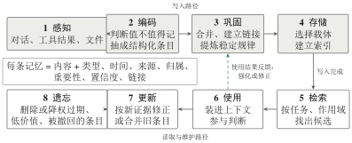

8.1 理解记忆
上下文窗口已经能装下一本书，为什么智能体还需要记忆？记忆到底是什么，和上下文工程、RAG 有什么区别？本节先算一笔账，说明把全部历史塞进窗口既贵又不可靠；再说明上下文工程管的是“这一次让模型看到什么”，记忆系统管的是“跨会话的状态怎样保存、更新和遗忘”。结论是：记忆不是一份更长的聊天记录，而是模型之外一层可长期读写的状态系统，它有自己的数据结构、生命周期和分类。
8.1.1 上下文窗口大一些，就够了吗
大语言模型（Large Language Model，LLM）每次生成回答，都只能依据这一次请求送进来的内容。这些内容的长度上限叫上下文窗口（context window），以 token（词元，模型处理文本的最小单位）计数：系统指令、历史对话、检索到的资料、工具结果，以及模型即将生成的输出，都要挤在这个窗口里。token 与汉字之间没有固定比例，取决于模型的分词器。以 DeepSeek 的官方文档为例，1 个中文字符约折合 0.6 个 token[1]，即 1 个 token 约对应 1.7 个汉字；较早的分词器对中文切得更碎，1 个汉字可能占 1 个甚至 2～3 个 token。表 8-1 按“1 个 token 约合 1～1.7 个汉字”给出常见窗口的量级。
表 8-1 上下文窗口的量级参照（1 个 token 按 1～1.7 个汉字估算）
| 窗口 | 大致汉字数 | 大致能放下 |
|---|---|---|
| 8K（8192 token） | 0.8 万～1.4 万字 | 一段较长的对话、一篇短文档 |
| 32K | 3.3 万～5.6 万字 | 一份长报告、一个中等规模的代码文件集合 |
| 128K | 13 万～22 万字 | 一本书，或几周的聊天记录 |
| 1M（约 \(10^{6}\) token） | 100 万～170 万字 | 多本书、大型代码仓库 |
既然窗口已经能装下几周的聊天记录，何必再设计记忆系统？问题在于“放得进去”不等于“用得好”。把全部历史都带进每次请求，至少有六类代价：
成本：按 token 计费的服务，输入费用随长度线性增长；自建服务则要为更长的序列付出显存（见例 8-1）。
延迟：首 token 延迟（Time To First Token，TTFT）中的预填充时间随输入长度增长，用户问一句短话也要等模型把全部历史读一遍。
噪声：寒暄、试错和已被推翻的旧版本与有用信息一起进入窗口，降低了有效信息的占比。
中间迷失：Liu 等人发现，相关信息位于长输入的开头或结尾时，模型利用得最好；位于中间时，准确率明显下降[2]。这一现象被称为 Lost in the Middle。
冲突混淆：同一件事的新旧说法同时出现时，窗口本身不提供“哪条更新、哪条已作废”的判断依据。
安全风险：带进来的历史文档和网页越多，其中夹带的恶意指令（提示注入）越容易生效。
第一类代价可以直接计算。第 4 章第 4.4.2 小节已经给出 KV 缓存的估算式 （4-7）：\(M_{\mathrm{KV}}\approx 2\times L\times H_{\mathrm{KV}}\times d_{\mathrm{head}}\times T\times B\times b_{\mathrm{KV}}\)，其中 \(L\) 为层数，\(H_{\mathrm{KV}}\) 为 KV 头数，\(d_{\mathrm{head}}\) 为每个头的维度，\(T\) 为序列长度，\(B\) 为同时驻留的请求数，\(b_{\mathrm{KV}}\) 为每个元素的字节数。预填充的计算量则约为每个 token \(2N\) 次浮点运算（\(N\) 为参数量）。下面用这两个式子比较“带全部历史”与“只带检索出的记忆”两种做法。
例 8-1 把三个月的聊天记录全部放进上下文要付出多少
某助手部署在单张 80 GB 显卡上，模型为 8B（B = billion，十亿，即 \(N=8\times10^{9}\)），结构与第 4 章例题相同：32 层，KV 头数 8，每头 128 维，KV 缓存以 BF16 存储（每元素 2 字节），BF16 权重约占 16 GB。某用户三个月的聊天记录约 20 万汉字。比较两种做法：（甲）每次请求都带上全部记录；（乙）由记忆系统检索出相关条目，连同系统指令和当前对话，每次请求共 4096 个 token。设显卡有效算力为 \(4\times10^{14}\) FLOP/s。
| 步骤 | 算什么 | 算式 | 结果 |
|---|---|---|---|
| 1 | 甲的 token 数 | \((2\times10^{5}\ \text{字})\times(0.6\ \text{token/字})\) | \(1.2\times10^{5}\) token |
| 2 | 每 token 的 KV 缓存 | \(2\times32\times8\times128\times2\) | 131 072 字节 |
| 3 | 甲的 KV 缓存 | \((1.2\times10^{5})\times131\,072\) | \(1.57\times10^{10}\) 字节 \(\approx\) 15.7 GB |
| 4 | 乙的 KV 缓存 | \(4096\times131\,072\) | \(5.4\times10^{8}\) 字节 \(\approx\) 0.54 GB |
| 5 | 可用显存下的并发数 | \((80-16)\div15.7\)；\((80-16)\div0.537\) | 甲 4 个；乙约 119 个 |
| 6 | 甲的预填充时间 | \((2\times8\times10^{9}\times1.2\times10^{5})\div(4\times10^{14})\) | 约 4.8 s |
| 7 | 乙的预填充时间 | \((2\times8\times10^{9}\times4096)\div(4\times10^{14})\) | 约 0.16 s |
数据从哪来：0.6 token/字取自 DeepSeek 文档的换算[1]；第 2 步各数为模型结构参数，代入式 （4-7） 并取 \(T=1\)、\(B=1\)；第 4 步的 0.54 GB 精确值为 \(5.37\times10^{8}\) 字节；第 5 步的 64 GB 是显存减去权重，未计运行时开销，因此结果偏乐观，并向下取整；第 6、7 步只计了 \(2N\) 的线性部分，没有计注意力随 \(T^{2}\) 增长的那部分，序列越长低估越多。
结论：带全部历史时，单个请求的 KV 缓存是乙的约 29 倍，一张卡只能同时服务 4 个用户，每次提问还要多等约 4.6 s。而且这还没算成本以外的五类代价。推理引擎的前缀缓存可以在两次请求开头完全相同的部分上免去重复的预填充计算（历史只在末尾追加时能命中，中间一改就失效），但缓存本身仍占显存，也解决不了噪声、冲突和中间迷失。
因此，窗口尺寸是一项珍贵资源，“把全部历史都带上”不能当成默认策略。窗口变大只是给了更多房间；房间里放什么、怎么找、过期的东西何时扔掉，是另一类问题。
8.1.2 上下文工程：决定这一次看到什么
先把问题说清楚。模型每次生成输出 \(y\)，依据的只有拼接起来的上下文 \(c\)： \[P(y \mid c),\qquad c=\bigl[\,c_{\mathrm{sys}};\ c_{\mathrm{hist}};\ c_{\mathrm{ret}};\ c_{\mathrm{mem}};\ c_{\mathrm{user}}\,\bigr], \tag{8-1}\] 其中 \(c_{\mathrm{sys}}\) 为系统指令与角色设定，\(c_{\mathrm{hist}}\) 为本次会话的历史，\(c_{\mathrm{ret}}\) 为检索到的外部资料，\(c_{\mathrm{mem}}\) 为从记忆系统取回的条目，\(c_{\mathrm{user}}\) 为当前用户输入。式 （8-1） 说明了一条朴素的规则：不在当前上下文里的信息，对这一次推理相当于不存在。模型参数里学到的一般知识除外，但它记不住某位用户上周说过什么。
决定 \(c\) 里放什么，就是上下文工程（context engineering）的工作，它的细节在第 7.4 节展开。这里只区分它和提示词工程（prompt engineering），见表 8-2。
表 8-2 提示词工程与上下文工程
| 提示词工程 | 上下文工程 | |
|---|---|---|
| 关注点 | 怎样把任务说清楚 | 模型此刻应该看到哪些信息 |
| 主要对象 | 指令写法、少样本示例、输出格式 | 当前任务、历史拼接、检索片段、工具状态、记忆 |
| 典型问题 | “怎么问，模型才答得更清楚？” | “哪些信息该进窗口，哪些该剔除？” |
| 修不了的问题 | 缺失的证据、错误的记忆、混乱的工具结果 | 跨会话没有保存下来的信息 |
上下文工程常归纳为四个动作：选择（Select），从大量对话与文档中挑出当前任务真正必需的信息；压缩（Compress），用摘要或删减在减少 token 的同时保留关键约束；排序（Order），把系统规则和关键材料放在开头、结尾等模型更容易利用的位置；隔离（Isolate），把系统指令、不可信的用户文本、第三方检索结果分开标注，降低提示注入的风险。管理会话历史时常用的几种做法都可以归到这四个动作里：时间滑动窗口（只留最近几轮，属于选择）、按重要性筛选（选择）、把旧对话压成摘要（压缩）、按主题分组再取组内细节（选择）、把即时状态与阶段摘要分层存放、互不覆盖（隔离）。
在系统里执行这四个动作的模块叫上下文构建器（Context Builder）。一次请求的处理顺序是：接收用户输入；读取当前会话状态和记忆片段；检索外部知识库；由上下文构建器做选择、压缩、排序与隔离；组装成最终提示交给模型。组装前它要过一遍检查清单：必要条件是否齐全？只是“可能有用”的冗余是否已剔除？是否存在版本冲突或已失效的约束？系统指令是否保持最高优先级？
看一个例子。学生问课程助手：“考试是哪一天？”
版本 A，信息不足：上下文里只有这句问话。模型不知道是哪门课，只能说不清楚，甚至编一个日期。
版本 B，全量堆叠：把八周以来所有课程群消息约两万字连同问题一起送入。模型被延期前的旧通知干扰，答出了作废的日期。
版本 C，精细上下文：系统指令 + 最新一条更新通知“考试定于 6 月 20 日” + 问题。回答正确、延迟低，还能指明出处。
版本 C 好在“放得对”，而不是“放得多”。但要做到版本 C，系统得先知道“最新通知”是哪一条、旧通知已经作废。这个信息从哪来？
辨析
上下文工程与记忆系统。上下文工程管理“这一次请求、此刻需要看到什么”，作用范围是单次调用的窗口；记忆系统管理“跨会话、跨任务的状态怎样长期保存、更新和遗忘”，作用范围是会话结束之后。两者是先后衔接的关系：记忆系统负责把状态存好、维护好，上下文工程负责在每次请求时从中挑出该用的部分装进窗口。只做窗口裁剪，用户第二天回来时什么都不剩；只做记忆存储而不做上下文工程，取回的记忆又会把窗口塞满。
8.1.3 记忆是什么：从聊天记录到状态系统
最常见的误解，是把记忆等同于“一份超长聊天记录加一个搜索框”。聊天记录可以当素材，但里面充满重复、口语、临时信息和已被推翻的决定。保存全部文本只是保存了“过去说过什么”，并没有形成“现在处于什么状态”。四句话可以帮助区分：相似不等于有用——一段内容与问题语义接近，可能只是都提到了“预算”；新鲜不等于正确——昨天刚写入的一条，可能是用户纠正之前的错误说法；重复不等于重要——一件事被提了三次，可能只是助手在反复确认；召回不等于理解——找到了相关记录，还要判断它在当前任务中是否仍然适用。
记忆值得专门设计，是因为它承担了四件事：连续性，任务跨越多次对话时不必每次从零开始；个性化，用户偏好、历史约束和已确认的决定能影响后续回答；经验复用，失败过的路径、成功的流程可以在相似任务中少走弯路；稳定状态，多步执行时计划、工具结果和待办事项保持一致。由此可以给出本章使用的定义：
智能体的长期记忆，是系统跨交互保存信息，并在未来任务中选择性地写入、组织、检索、更新和遗忘这些信息的能力。
这个定义包含四个要素：它跨时间存在（会话结束后仍在）；它影响未来行为（不是只存不用的档案）；它能被更新和治理（可以修改、删除、限定访问范围）；它能接受反馈评估（可以检验用了它之后任务是否做得更好）。从工程上看，记忆是模型之外一层可长期读写的状态系统，载体可以是文本文件、数据库、知识图谱，也可以混合使用。用了哪种数据库只是实现细节，不是定义的一部分。这里所说的“记忆”是功能层面的说法，不表示系统拥有人脑那样的机制。
一条记忆的字段 既然记忆要被更新、删除、限定范围，一条记忆就不能只是一段文字。表 8-3 列出一条记忆常见的字段。
表 8-3 一条记忆的常见字段（以“用户现在主要用 Python”为例）
| 字段 | 含义 | 例子 | 用途 |
|---|---|---|---|
| content | 内容（文本或图谱三元组） | 用户现在主要用 Python 开发 | 被检索、被装进上下文 |
| type | 类型 | 语义记忆（偏好） | 决定保留期限和检索路由 |
| time | 产生与更新时间 | 2025-05-12 写入 | 判断新旧、处理冲突 |
| source | 来源 | 用户原话（而非系统推测） | 判断可信度 |
| owner / scope | 归属的用户、会话或项目，以及适用范围（长期或仅本次任务） | 用户 A，长期偏好 | 防止跨用户或跨任务串用 |
| importance | 重要性（0～1） | 0.7 | 决定保留与检索优先级 |
| confidence | 置信度 | 0.9 | 区分确认事实与推测 |
| links | 关联记忆的指针 | 指向“此前主要用 Java”那一条 | 沿关系扩展检索、追溯版本 |
生命周期 一条记忆从产生到消失，要经过八个环节（图 8-2）：感知（接收对话、工具结果、文件等输入）、编码（判断值不值得记，并抽取成结构化条目）、巩固（与已有记忆合并、建立联系，从多次经历中提炼稳定规律）、存储（写入合适的载体并建立索引）、检索（按当前任务找出候选）、使用（装进上下文参与判断）、更新（根据新证据修改旧条目）和遗忘（删除或降权过期、低价值、被用户撤回的条目）。前四个环节构成写入路径，后四个构成读取与维护路径；使用的结果又会反馈回来，决定哪些记忆该强化、哪些该修正。每个环节都含有决策：要不要记？以什么形式记？什么时候取？用过之后它有没有证明自己的价值？

图 8-2 记忆的生命周期。上排为写入路径，下排为读取与维护路径；虚线表示使用的结果反馈给巩固环节，决定哪些记忆被强化、哪些被修正。每个环节都要依靠条目上的元数据做判断
四种更新操作 只会追加的系统，迟早会同时保留几个互相矛盾的“当前状态”。表 8-4 列出四种更新操作。
表 8-4 记忆的四种更新操作
| 操作 | 适用情况 | 例子 |
|---|---|---|
| 追加（Append） | 新事件与已有记忆独立、不冲突 | 新增“5 月 12 日提交了第 3 次作业” |
| 修正（Update） | 新事实替代旧事实 | “主要用 Java”被“现在主要用 Python”覆盖，旧条目标为失效 |
| 合并（Merge） | 多条同类碎片可以压成一条 | 三次关于格式偏好的零散反馈合成一条“偏好先给结论” |
| 删除（Delete） | 过期、错误或被用户注销的数据 | 用户要求删除自己的家庭住址 |
8.1.4 记忆的分类
记忆可以从两个角度分类：按存在多久分为短期和长期，按记的是什么分为情景、语义和程序。两种分法是交叉的，不是同一层级上的并列。
短期记忆与长期记忆 短期记忆通常就是工作记忆，限于当前会话或当前任务：用户刚上传了哪个文件、做到第几步、还要调用什么工具。它直接受上下文窗口限制，会话结束后一般不再保留。管理短期记忆靠的正是上一小节的上下文工程。长期记忆独立于窗口，保存跨会话的交互历史、用户特征和任务经验，需要时再被检索出来。表 8-5 对比了两者。
表 8-5 短期记忆与长期记忆
| 比较项 | 短期记忆（工作记忆） | 长期记忆 |
|---|---|---|
| 范围 | 当前会话或一项多步任务 | 多个会话、多个任务阶段 |
| 用途 | 保持当前推理与执行状态 | 延续用户、项目和经验状态 |
| 容量约束 | 直接受上下文窗口限制 | 可扩展到外部存储，但检索难度随之增加 |
| 生命周期 | 会话结束或任务完成后清理 | 按事实、事件、流程分别设定保留期 |
| 管理手段 | 上下文工程（选择、压缩、排序、隔离） | 写入、合并、索引、检索、更新、遗忘 |
| 主要风险 | 信息过多、注意力分散 | 陈旧、冲突、错误扩散、隐私越界 |
情景、语义与程序记忆 长期记忆按内容性质还可细分。这一划分来自认知心理学：情景记忆与语义记忆的区分由 Tulving 在 1972 年提出[4]，程序记忆则属于 Squire 所说的非陈述性记忆[5]。三者的差别不在于存放在哪个数据库，而在于回答什么类型的问题（表 8-6）。
表 8-6 情景记忆、语义记忆与程序记忆（以编程辅导助手为例）
| 类型 | 回答的问题 | 例子 | 常见载体 |
|---|---|---|---|
| 情景记忆 | 我经历过什么？ | 学生在上周三的第 3 题中把循环边界写错了 | 会话记录、工具调用轨迹、日志 |
| 语义记忆 | 我知道哪些事实？ | 该学生偏好 Python，已掌握基础语法 | 用户画像、结构化字段、知识图谱节点 |
| 程序记忆 | 这件事该怎么做？ | 回答前先查讲义，再调用代码执行工具验证 | 工作流、标准作业程序（SOP）、技能文件、代码片段 |
三类记忆经常一起工作。只记事实，助手知道用户喜欢简洁，却不知道怎样组织一份合格的报告；只记流程，助手会按步骤执行，却可能忽略用户的特殊情况；只有情景，助手能复述上次发生了什么，却不一定能从中抽出下次可用的规则。把多次情景提炼成语义或程序记忆，就是第 8.3.5 小节要讲的“巩固”。
辨析
情景记忆与语义记忆。区分的关键是有没有具体的时间和情境。“5 月 12 日用户说他改用 Python 了”是情景记忆，记录的是一次事件；“用户主要用 Python”是语义记忆，是从事件中抽象出的、脱离具体时间的事实。同一信息可以两种形式都存：语义条目供快速使用，情景条目作为证据，以便日后核对和纠错。程序记忆则与两者都不同，它记的是“怎么做”，往往直接表现为可执行的步骤或代码。
七类记忆 设计系统时，还可以把智能体需要维护的状态细分为七类（表 8-7）。其中参数记忆（parametric memory）指模型在预训练和微调中固化在权重里的知识，更新代价高；与之相对，存放在外部数据库或文档中、可以随时增删改的内容称为非参数记忆（non-parametric memory），表中除参数记忆外的各类都属于此。这七类是观察同一个系统的不同角度，并不要求建七个互不相干的数据库。
表 8-7 七类记忆与典型状态
| 类型 | 回答的问题 | 典型状态或载体 |
|---|---|---|
| 工作记忆 | 现在在做什么，做到哪一步 | 当前任务、变量、近几轮对话、工具中间结果 |
| 语义记忆 | 哪些事实和规则长期有效 | 用户画像、项目规则、知识图谱节点 |
| 情景记忆 | 过去发生过哪些事件 | 会话记录、日志、调用轨迹、失败路径、反馈 |
| 程序记忆 | 这类任务该怎样完成 | 工作流、SOP、技能文件、代码套路 |
| 检索记忆 | 当前任务要从外部取回什么 | 外部文档库、向量索引、图谱检索入口 |
| 参数记忆 | 模型内部已经学会了什么 | 权重中的语言能力与一般知识 |
| 前瞻记忆 | 将来还要完成什么 | 待办清单、提醒、尚未触发的计划 |
把七类放进同一个任务里看。用户让助手准备周五的季度汇报：当前做到哪一步是工作记忆；领导偏好先看结论、项目指标口径是语义记忆；上次图表把月份写错是情景记忆；检查图表和附件的步骤是程序记忆；公司报告模板要从知识库取回，属于检索记忆；模型本身能读懂表格、会写绘图代码，依赖参数记忆；周四晚上提醒做最终检查是前瞻记忆。一个任务往往同时依赖多种状态。设计时先问“这份状态由谁写入、谁能读取、何时失效、出错怎样纠正”，存储形式放在这些问题之后决定。
8.1.5 长期记忆与 RAG、长上下文、微调
长期记忆最容易和第 5 章的检索增强生成（Retrieval-Augmented Generation，RAG）混为一谈，因为二者都“从外部取回内容放进上下文”。先简要回顾 RAG 的流程：离线阶段把文档清洗、保留标题结构、附上作者与日期等元数据，再切成块（固定长度切块、按文档结构切块或按语义切块），用嵌入模型把每块编码成向量存入向量数据库；在线阶段改写用户问题，用稀疏检索（如 BM25，按词频与逆文档频率给关键词匹配打分，擅长专有名词、编号和精确数字）和稠密检索（向量相似度，擅长同义改写）召回候选，再用交叉编码器（把问题与候选片段拼在一起送入模型打分，比分别编码更准但更慢）重排序，取少量片段装进上下文生成回答。RAG 答错通常出在六处：库里根本没有答案、切块切断了关键条件、措辞差异太大没召回、召回了相似但错误的内容、模型无视了上下文中的证据、召回了旧版本而缺少时间判断。这些机制的细节见第 5.2 ～ 5.4 节和第 5.8 节。
表 8-8 长上下文、RAG、微调与长期记忆
| 技术路线 | 主要解决的问题 | 更新方式与代价 | 跨会话状态 |
|---|---|---|---|
| 长上下文 | 单次推理中通读大量材料 | 不需要“更新”，但每次请求通常都要重新付全部 token 的预填充计算（前缀缓存只能复用开头不变的部分） | 无，会话结束即消失 |
| RAG | 从外部知识库查找证据 | 更新文档并重建索引，代价低 | 无，知识库不记录“谁、何时、经历了什么” |
| 微调 | 改变模型的行为、文风或领域能力 | 重新训练参数，代价高，不能逐条增删与审计 | 固化在权重中，不区分用户 |
| 长期记忆 | 保存、巩固、更新跨时间的经验与状态 | 逐条增删改，代价低，但要设计写入与冲突规则 | 有，且按用户、项目归属 |
表 8-8 把四条路线放在一起。长期记忆与 RAG 的分界，在于“静态知识库”与“有状态的系统”。普通 RAG 只回答一个问题：“库里哪段文本与当前提问相似？”长期记忆还要回答：这条信息值得保存吗？它推翻了旧结论吗？它属于谁？何时失效？是否该主动遗忘？表 8-9 列出了具体差别。
表 8-9 普通 RAG 与长期记忆系统
| 维度 | 普通 RAG（静态知识库） | 长期记忆系统 |
|---|---|---|
| 内容来源 | 预先整理好的文档 | 交互中不断产生的对话、反馈与行动结果 |
| 写入 | 运营者批量导入，运行时只读 | 运行时由系统自己判断并写入 |
| 时间线 | 一般没有“新旧”与有效期概念 | 每条带时间戳，区分“当时为真”与“现在为真” |
| 归属 | 公共知识，不属于某个用户 | 属于特定用户、会话或项目，需隔离 |
| 更新与冲突 | 替换文档即可 | 追加、修正、合并、删除，需处理冲突 |
| 遗忘 | 不涉及 | 按价值、期限或用户要求主动遗忘 |
| 典型问题 | “接口 X 怎么调用？”（知识召回） | “这位用户上周把接口切到测试环境了吗？”（状态召回） |
辨析
RAG 与长期记忆。两者可以共用向量检索、重排序等组件，所以“把向量数据库接到模型上”并不自动得到长期记忆。缺的是写入判断、时间、来源、归属、更新和遗忘这些状态管理环节。反过来，长期记忆的“检索”一步常常就借用 RAG 的检索器。可以说：RAG 是一种取回机制，长期记忆是一个有生命周期的状态系统，前者可以是后者的一个组件。
8.1.6 记忆系统的本质：状态工程
到这里，可以把记忆系统的工作概括为一句话：维护智能体执行任务所需的状态，并让这些状态在正确的时间、以正确的形式进入当前判断。这种视角可以称为状态工程。它关心的不是“有没有存”，而是状态是否完整、是否仍然有效、是否来自可信来源、是否允许被当前任务读取，以及冲突时依据什么更新。
五个动作与边界 一套可用的状态系统要循环执行五个动作：写入，从输入中提取值得保存的内容并记录来源；合并，把新状态与已有状态对齐，避免出现几个互相矛盾的用户画像；组织，建立适合检索的索引和分组；取回，按任务、作用域和风险挑选内容；遗忘，处理过期、低价值或不允许继续保留的状态。状态还需要边界：当前会话里的临时猜测不应自动变成长期偏好；某个项目的规则不应扩散到所有项目；不同用户的数据在检索时不能混在一起。
三种实现思路 从理念到实现，有三种有代表性的做法，它们把复杂度放在了不同位置。第一种是分层存储加混合检索：按时效把内容放进不同的存储层，检索时把向量相似度与 BM25 关键词得分加权融合（例如向量得分乘 0.7、BM25 得分乘 0.3）。第二种是文件即记忆：原始全文长期保存在文件里，“什么时候召回”和“记忆里存了什么”分开设计，保留了完整证据，代价是文件越多，组织和去重越费事。第三种是纯文件系统、让模型自己当检索器：把记忆写成若干 Markdown 文件，由模型阅读目录和文件来找内容，实现最直接，但文件规模一大，检索开销和上下文窗口就成了天花板。
混合检索怎样把两路得分合在一起？常用两种办法：加权求和，以及倒数排名融合（Reciprocal Rank Fusion，RRF）[3]。RRF 不看原始得分，只看每路检索给出的名次 \(r\)： \[s_{\mathrm{RRF}}(m)=\sum_{j}\frac{1}{k+r_{j}(m)}, \tag{8-2}\] 其中 \(r_{j}(m)\) 是记忆 \(m\) 在第 \(j\) 路检索中的名次，没被某一路召回的则不计该项；\(k\) 是平滑常数，原论文取 60。加权求和要求两路得分先归一化到同一尺度，RRF 则绕开了“向量得分和 BM25 得分不可比”的问题。
例 8-2 两种融合方式给出不同的排序
用户问：“我上次说的 CS302 作业截止时间是哪天？”记忆库中有四条候选：A“用户说操作系统作业下周交”，B“CS302 作业截止日改为 5 月 20 日”，C“用户抱怨作业太多”，D“CS302 第二次作业已提交”。两路检索的结果如下（向量得分为余弦相似度，BM25 得分已除以最高分归一化到 0～1，“—”表示未召回）：
| 记忆 | 向量得分 | 向量名次 | BM25 得分 | BM25 名次 | 说明 |
|---|---|---|---|---|---|
| A | 0.92 | 1 | 0.20 | 3 | 语义最接近，但不含“CS302” |
| B | 0.88 | 2 | 1.00 | 1 | 同时命中“CS302”和“截止” |
| C | 0.85 | 3 | — | — | 只在语义上相近 |
| D | 0.70 | 4 | 0.75 | 2 | 命中“CS302” |
加权求和（\(0.7\times\text{向量}+0.3\times\text{BM25}\)）： A \(=0.7\times0.92+0.3\times0.20=0.644+0.060=0.704\)； B \(=0.7\times0.88+0.3\times1.00=0.616+0.300=0.916\)； C \(=0.7\times0.85+0=0.595\)； D \(=0.7\times0.70+0.3\times0.75=0.490+0.225=0.715\)。 排序为 B \(>\) D \(>\) A \(>\) C。
RRF（\(k=60\)，按式 （8-2））： A \(=1/(60+1)+1/(60+3)\approx0.01639+0.01587\approx0.03227\)； B \(=1/(60+2)+1/(60+1)\approx0.01613+0.01639\approx0.03252\)； C \(=1/(60+3)\approx0.01587\)； D \(=1/(60+4)+1/(60+2)\approx0.01563+0.01613\approx0.03175\)。 排序为 B \(>\) A \(>\) D \(>\) C。
结论：两种方法都把真正有用的 B 排在第一，但第二名不同。加权求和让精确命中“CS302”的 D 胜出，RRF 则因为 A 在向量一路排第一而让 A 胜出。RRF 的各项得分差距很小（\(k=60\) 把名次差异压平了），它适合两路得分尺度不可比的场合；加权求和对权重和归一化方式很敏感，权重要在自己的数据上调。无论哪种方法，都还需要后面的时间过滤：如果 B 已被更新的通知取代，排第一也没用。
什么是好记忆 记住所有事情不是目标。评价一套记忆，至少看五点。
高密度压缩：寒暄、重复确认和临时试错不必长期占用状态。与其保存“用户周三上午十点说的第二句话里有个‘尽量’”，不如提炼成“用户希望周五前完成，周五是硬截止”，并保留原话作为证据。
按任务路由：相似只是候选入口。一个关于“预算”的问题，可能同时召回财务制度、某项目的预算表和用户的一句抱怨，还要按任务类型、作用域、时间和风险筛选。
合理遗忘：过期偏好会干扰新需求，临时权限更不应无限保留。遗忘减少了检索噪声，问题在于系统能否解释为什么保留、为什么删除。
处理冲突：用户上周说“回答尽量详细”，本周说“没时间，先给三点结论”。系统不能简单选“最新”或“最相似”的一条，而要看时间、来源、适用任务和证据强度——本周的要求可能只针对这一次。
可解释、可纠错：有人把对用户的长期建模称为用户的“数字孪生”，在工程上它只是一个在任务中维护的用户模型。它应当让用户看得到、改得了，承认自己只掌握与任务有关的一部分信息。
本节要点
把全部历史放进窗口，KV 缓存随长度线性增长，预填充计算量至少线性增长（注意力部分随长度平方增长），还带来噪声、中间迷失、冲突和注入风险。
上下文工程决定单次请求看到什么；记忆系统维护跨会话的状态。前者是后者进入模型的出口。
一条记忆带有类型、时间、来源、归属、重要性、置信度和链接，经历感知、编码、巩固、存储、检索、使用、更新、遗忘八个环节。
RAG 是取回机制，长期记忆是有写入、更新、遗忘和归属的状态系统。